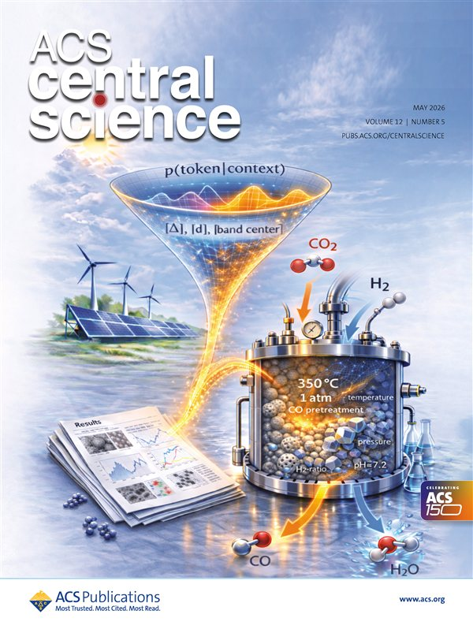

Peer-Reviewed Work
Publications
6,245 total citations · h-index: 26 · * corresponding author · Full list on Google Scholar →
Journal Covers

ACS Central Science, 2026
Ramos, Michtavy, White*, Porosoff*


University of Rochester
2026
36
Chem Catalysis · Cell Press · 2026
Transparent Reporting for Agentic Catalysis Enabled by Artificial Intelligence: Community Guidelines and a Publication Checklist
Xin, H.*; Kitchin, J.R.*; López, N.*; Schweitzer, N.M.; Abolhasani, M.; Artrith, N.; Árnadóttir, L.; Choudhary, K.; Ding, R.; Frenkel, A.I.; Gauthier, J.A.; Goldsmith, B.R.; Barati Farimani, A.; Grabow, L.C.; Gunasooriya, G.T.K.K.; Hu, G.; Josephson, T.R.; Kulik, H.J.; Kumar, R.; Laino, T.; Li, H.; Li, X.-Y.; Li, W.-L.; Linic, S.; Liu, C.; Liu, C.; Liu, F.; Liu, M.; Ma, P.; Medford, A.J.; Mukhopadhyay, S.; Ou, P.; Paolucci, C.; Peng, J.; Phillips, C.; Porosoff, M.D.; Qi, L.; Sun, S.; Szilvási, T.; Voss, J.; Wang, X.; Winther, K.T.; Wu, Q.; Zhang, D.; Zhang, Z.
DOI: 10.1016/j.checat.2026.101755 →
35
ACS Central Science · 2026 · Front Cover
Bayesian Optimization of Catalysis with In-Context Learning
Ramos, M.C.; Michtavy, S.S.; White, A.D.*; Porosoff, M.D.*
DOI: 10.1021/acscentsci.5c02418 →
34
Chem Catalysis · Cell Press · 2026 · Preview Article
Balancing Carbon and Hydrogen Atom Efficiencies in Sustainable Syngas-to-Olefin Catalysis
Perera, S.M.H.D.; Porosoff, M.D.*
DOI: 10.1016/j.checat.2026.101657 →
33
ACS Catalysis · 2026
Achieving Phase Control of Polymorphic Tungsten Carbide Catalysts
Perera, S.M.H.D.; Ciuffetelli, E.; Porosoff, M.D.*
DOI: 10.1021/acscatal.5c07774 →
32
EES Catalysis · Royal Society of Chemistry · 2026 · Cover Article & HOT Article
Leveraging and Understanding Exotherms in Tandem Catalysts with In Situ Luminescence Thermometry
Perera, S.M.H.D.; Harrington, B.; Fadhul, A.; Pickel, A.D.*; Porosoff, M.D.*
DOI: 10.1039/D5EY00319A →
2025
31
Journal of the American Chemical Society · 2025
Intrinsically Bifunctional and Tunable Tungsten Carbide Catalysts Enable Efficient PVC-Compatible Polyolefin Hydrocracking
Nwachukwu, U.C.; Moegling, M.J.; Perera, S.M.H.D.; Pathan, A.N.; Chen, J.; Rezvani, F.; Valappil, A.R.V.; Zhou, C.; Rahman, L.; Liu, J.; Kim, S.; Eagan, J.M.; Deshpande, S.*; Porosoff, M.D.*; Chen, L.*
DOI: 10.1021/jacs.5c11845 →
30
Chemical Engineering Journal · 2025
Transition Metal-Doped Aluminum Nitride Catalysts for Propane Dehydrogenation
Abdelgaid, M.; Perera, S.M.H.D.; Ahmadov, R.; Porosoff, M.D.; Mpourmpakis, G.*
DOI: 10.1016/j.cej.2025.161774 →
29
Catalysis Science & Technology · Royal Society of Chemistry · 2025
Effect of Pretreatment Conditions on Fe-ZSM-5 Properties and Performance for Fischer–Tropsch Synthesis
Agwara, J.N.; Leshchev, D.; Perera, S.M.H.D.; Bauer, A.K.; Neidig, M.L.; Porosoff, M.D.*
DOI: 10.1039/D4CY00765D →
2024
28
Chemical Science · Royal Society of Chemistry · 2024
Selective Adsorption of Fluorinated Super Greenhouse Gases within a Metal–Organic Framework with Dynamic Corrugated Ultramicropores
Whitehead, B.S.; Brennessel, W.W.; Michtavy, S.S.; Silva, H.A.; Kim, J.; Milner, P.J.; Porosoff, M.D.; Barnett, B.R.*
DOI: 10.1039/D3SC07007G →
27
Langmuir · ACS · 2024 · Invited Article · Issue 19 Cover
Dual Functional Materials: At the Interface of Catalysis and Separations
Ahmadov, R.; Michtavy, S.S.; Porosoff, M.D.*
DOI: 10.1021/acs.langmuir.3c03888 →
2023
26
ACS Catalysis · 2023
Reactive Separations of CO/CO₂ Mixtures over Ru–Co Single Atom Alloys
Liu, R.; El Berch, J.N.; House, S.; Meil, S.W.; Mpourmpakis, G.*; Porosoff, M.D.*
DOI: 10.1021/acscatal.2c05110 →
2022
25
Nanoscale · Royal Society of Chemistry · 2022 · Invited Article
Establishing Tungsten Carbides as Active Catalysts for CO₂ Hydrogenation
Juneau, M.; Yaffe, D.; Liu, R.; Agwara, J.N.; Porosoff, M.D.*
DOI: 10.1039/D2NR03281C →
24
ChemCatChem · Wiley · 2022 · Invited Article
Challenges and Opportunities of Fe-Based Core-Shell Catalysts for Fischer-Tropsch Synthesis
Agwara, J.N.; Bakas, N.J.; Neidig, M.L.; Porosoff, M.D.*
DOI: 10.1002/cctc.202200289 →
2021
23
Chem · Cell Press · 2021
Recent Advances in Carbon Dioxide Hydrogenation to Produce Olefins and Aromatics
Wang, D.; Xie, Z.; Porosoff, M.D.*; Chen, J.G.*
DOI: 10.1016/j.chempr.2021.02.024 →
22
Applied Catalysis A: General · Elsevier · 2021
Support Acidity as a Descriptor for Reverse Water-Gas Shift over Mo₂C-Based Catalysts
Juneau, M.; Pope, C.; Liu, R.; Porosoff, M.D.*
DOI: 10.1016/j.apcata.2021.118034 →
2020
21
Applied Catalysis B: Environmental · Elsevier · 2020
Selective Hydrogenation of CO₂ and CO over Potassium Promoted Co/ZSM-5
Liu, R.; Leshchev, D.; Stavitski, E.; Juneau, M.; Agwara, J.N.; Porosoff, M.D.*
DOI: 10.1016/j.apcatb.2020.119787 →
20
Journal of CO₂ Utilization · Elsevier · 2020
Identifying Correlations in Fischer-Tropsch Synthesis and CO₂ Hydrogenation over Fe-Based ZSM-5 Catalysts
Liu, R.; Ma, Z.; Sears, J.D.; Juneau, M.; Neidig, M.L.; Porosoff, M.D.*
DOI: 10.1016/j.jcou.2020.101290 →
19
Energy & Environmental Science · Royal Society of Chemistry · 2020
Assessing the Viability of K-Mo₂C for Reversed Water-Gas Shift Scale-Up: Molecular to Laboratory to Pilot Scale
Juneau, M.; Vonglis, M.; Hartvigsen, J.; Frost, L.; Bayerl, D.; Dixit, M.; Mpourmpakis, G.; Morse, J.R.; Baldwin, J.W.; Willauer, H.D.*; Porosoff, M.D.*
DOI: 10.1039/D0EE01457E →
18
ChemCatChem · Wiley · 2020
Characterization of Metal-Zeolite Composite Catalysts: Determining the Environment of the Active Phase
Juneau, M.; Liu, R.; Peng, Y.; Malge, A.; Ma, Z.; Porosoff, M.D.*
DOI: 10.1002/cctc.201902039 →
2019
17
Journal of CO₂ Utilization · Elsevier · 2019
Alkali Promoted Tungsten Carbide as a Selective Catalyst for the Reverse Water Gas Shift Reaction
Morse, J.R.; Juneau, M.; Baldwin, J.W.; Porosoff, M.D.*; Willauer, H.D.*
DOI: 10.1016/j.jcou.2019.08.024 →
16
ACS Catalysis · 2019
Development of Tandem Catalysts for CO₂ Hydrogenation to Olefins
Ma, Z.; Porosoff, M.D.*
DOI: 10.1021/acscatal.8b05060 →
2017
15
Catalysis Science & Technology · Royal Society of Chemistry · 2017
Elucidating the Role of Oxygen Coverage in CO₂ Reduction on Mo₂C
Dixit, M.; Peng, X.; Porosoff, M.D.; Willauer, H.D.; Mpourmpakis, G.*
DOI: 10.1039/c7cy01810j →
Prior to University of Rochester
2017
14
ChemSusChem · Wiley · 2017
Potassium-Promoted Molybdenum Carbide as a Highly Active and Selective Catalyst for CO₂ Conversion to CO
Porosoff, M.D.; Baldwin, J.W.; Peng, X.; Mpourmpakis, G.; Willauer, H.D.*
DOI: 10.1002/cssc.201700412 →
2016
13
Energy & Environmental Science · Royal Society of Chemistry · 2016
Catalytic Reduction of CO₂ by H₂ for Synthesis of CO, Methanol and Hydrocarbons: Challenges and Opportunities
Porosoff, M.D.; Yan, B.; Chen, J.G.*
DOI: 10.1039/C5EE02657A →
2015
12
Angewandte Chemie International Edition · Wiley · 2015
Identifying Different Types of Catalysts for CO₂ Reduction by Ethane through Dry Reforming and Oxidative Dehydrogenation
Porosoff, M.D.; Myint, M.N.Z.; Kattel, S.; Xie, Z.; Gomez, E.; Liu, P.; Chen, J.G.*
DOI: 10.1002/anie.201508128 →
11
Chemical Communications · Royal Society of Chemistry · 2015
Identifying Trends and Descriptors for Selective CO₂ Conversion to CO over Transition Metal Carbides
Porosoff, M.D.; Kattel, S.; Li, W.; Liu, P.; Chen, J.G.*
DOI: 10.1039/C5CC01545F →
10
Applied Catalysis A: General · Elsevier · 2015
Effect of Oxide Supports on Pd-Ni Bimetallic Catalysts for 1,3-Butadiene Hydrogenation
Hou, R.; Porosoff, M.D.; Chen, J.G.*; Wang, T.*
DOI: 10.1016/j.apcata.2014.11.001 →
2014
9
Catalysis Today · Elsevier · 2014
Effects of Oxide Supports on the Water-Gas Shift Reaction over Pt-Ni Bimetallic Catalysts: Activity and Methanation Inhibition
Wang, T.; Porosoff, M.D.; Chen, J.G.*
DOI: 10.1016/j.cattod.2013.09.037 →
8
Journal of Catalysis · Elsevier · 2014
Selective Hydrogenation of 1,3-Butadiene on Pd-Ni Bimetallic Catalyst: From Model Surfaces to Supported Catalysts
Hou, R.; Yu, W.; Porosoff, M.D.; Chen, J.G.*; Wang, T.*
DOI: 10.1016/j.jcat.2014.04.015 →
7
Journal of Catalysis · Elsevier · 2014
Theoretical and Experimental Studies of the Adsorption Geometry and Reaction Pathways of Furfural over Fe-Ni Bimetallic Model Surfaces and Supported Catalysts
Yu, W.; Xiong, K.; Ji, N.; Porosoff, M.D.; Chen, J.G.*
DOI: 10.1016/j.jcat.2014.06.025 →
2013
6
Journal of Catalysis · Elsevier · 2013
Challenges and Opportunities in Correlating Bimetallic Model Surfaces and Supported Catalysts
Porosoff, M.D.; Yu, W.; Chen, J.G.*
DOI: 10.1016/j.jcat.2013.05.009 →
5
Journal of Catalysis · Elsevier · 2013
Trends in the Catalytic Reduction of CO₂ by Hydrogen over Supported Monometallic and Bimetallic Catalysts
Porosoff, M.D.; Chen, J.G.*
DOI: 10.1016/j.jcat.2013.01.022 →
4
Molecular Pharmaceutics · ACS · 2013
Ex Vivo Characterization of Particle Transport in Mucus Secretions Coating Freshly Excised Mucosal Tissues
Ensign, L.M.; Henning, A.; Schneider, C.S.; Maisel, K.; Wang, Y.Y.; Porosoff, M.D.; Cone, R.; Hanes, J.*
DOI: 10.1021/mp400087y →
2012
3
Applied Catalysis A: General · Elsevier · 2012
Controlling Hydrogenation of C=O and C=C Bonds in Cinnamaldehyde Using Silica Supported Co-Pt and Cu-Pt Bimetallic Catalysts
Zheng, R.; Porosoff, M.D.; Weiner, J.L.; Lu, S.; Zhu, Y.; Chen, J.G.*
DOI: 10.1016/j.apcata.2012.01.019 →
2
Chemical Reviews · ACS · 2012
Review of Pt-Based Bimetallic Catalysis: From Model Surfaces to Supported Catalysts
Yu, W.; Porosoff, M.D.; Chen, J.G.*
DOI: 10.1021/cr300096b →
1
ChemSusChem · Wiley · 2012
ZK-5: A CO₂-Selective Zeolite with High Working Capacity at Ambient Temperature and Pressure
Liu, Q.; Pham, T.; Porosoff, M.D.; Lobo, R.F.*
DOI: 10.1002/cssc.201200339 →